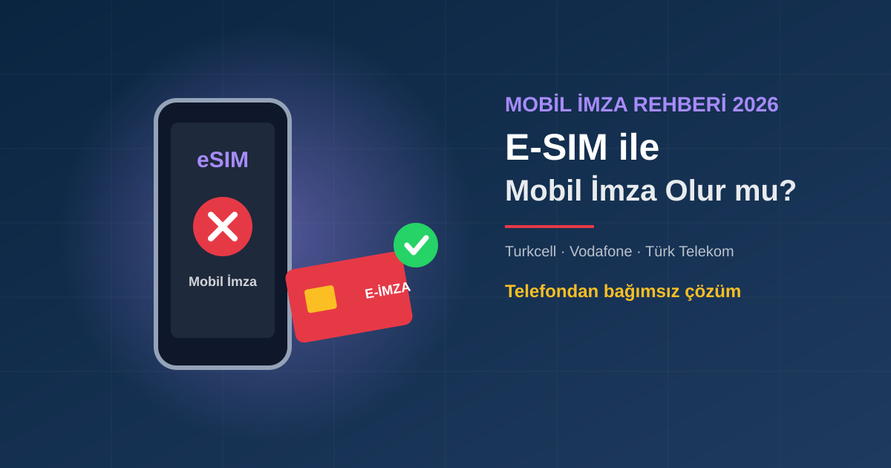

Kısa Cevap: Şu An İçin Hayır
Mobil imzada nitelikli elektronik sertifikanız SIM kartın içindeki güvenli alanda saklanır. Bu yüzden mobil imza, belirli teknik özelliklere sahip fiziksel SIM kartlara bağlıdır. Ekim 2026 itibarıyla operatörlerin resmi açıklamalarında durum şöyle:
| Operatör | Resmi bilgi | E-SIM'de mobil imza |
|---|---|---|
| Turkcell | "Mobil İmza sadece 128K SIM Kart'larda kullanılabilmektedir, E-SIM'lerde Mobil İmza kullanılamamaktadır." | Kullanılamıyor |
| Vodafone | Başvuruda SIM kartın "Mobil İmza'ya uyumlu" olması gerekiyor | Resmi destek duyurusu yok |
| Türk Telekom | Resmi açıklama bulunamadı; basında mobil imza için SIM kart değişikliği yapıldığı aktarılıyor | Resmi destek duyurusu yok |
Operatörler bu politikayı ileride değiştirebilir. E-SIM'e geçmeden önce kendi operatörünüzün müşteri hizmetlerinden güncel durumu teyit edin.
E-SIM'e Geçince Mobil İmzanıza Ne Olur?
Turkcell'in kendi açıklamasına göre mobil imza sertifikası SIM kartta bulunur ve "hem yasal hem de teknik olarak başka bir sim karta taşınması mümkün değildir." Aynı sayfada SIM kart değişikliğinde mobil imzanın iptal olduğu ve SIM değiştirilecek tüm durumlarda önce servisin iptal edilmesi gerektiği yazıyor.
E-SIM'e geçmek teknik olarak bir SIM değişikliğidir. Yani:
- Fiziksel SIM'den e-SIM'e geçtiğinizde mevcut mobil imzanız çalışmaz hale gelir.
- Sertifika yeni karta aktarılamaz; mobil imza için yeniden başvuru ve uyumlu fiziksel SIM gerekir.
- Telefon değiştirip SIM'i yeni telefona takarsanız sorun olmaz; sorun SIM kartın kendisinin değişmesidir.
Neden 128K SIM Kart Şart?
Turkcell'in sayfasında belirtildiği üzere, BTK'nın elektronik imzada kullanılan SIM kartların şifreleme algoritmasına ilişkin düzenlemesiyle 1 Ocak 2015'ten itibaren mobil imza yalnızca 128K SIM kartlarda kullanılabiliyor. Sertifika ve imza anahtarı bu kartın güvenli bölümünde üretilir ve dışarı çıkarılamaz. Operatörlerin resmi sayfalarında e-SIM üzerinde mobil imza hizmeti sunulduğuna dair bir duyuru bulunmuyor.
E-SIM Kullanıyorsanız Seçenekleriniz
1. Fiziksel 128K SIM'e dönün
Mobil imzadan vazgeçmek istemiyorsanız operatörünüzden mobil imza uyumlu fiziksel SIM alıp mobil imza başvurusunu yeniden yaparsınız. E-SIM avantajlarından (çift hat, kolay cihaz değişimi) vazgeçmeniz gerekebilir.
2. Kart tipi e-imza alın
Sertifika telefonunuzda değil, bilgisayara takılan akıllı kart veya USB token'da durur. E-SIM'e geçmek, operatör ya da telefon değiştirmek imzanızı etkilemez.
Mobil İmza mı, Kart Tipi E-İmza mı?
İkisi de 5070 sayılı Kanun kapsamında nitelikli elektronik imzadır ve güvenli elektronik imza olarak elle atılan imzayla aynı hukukî sonucu doğurur (kanundaki istisnalar hariç). Seçim, nasıl çalıştığınıza bağlıdır:
| Mobil imza | Kart tipi e-imza | |
|---|---|---|
| Sertifikanın yeri | SIM kart | Akıllı kart / USB token |
| E-SIM ile | Turkcell'de kullanılamıyor | Etkilenmez |
| SIM / operatör değişimi | Mobil imza iptal olur | Etkilenmez |
| Ücret modeli | Aylık abonelik (Turkcell: 62 TL/ay, Ekim 2026) | Tek seferlik paket (1-3 yıl) |
| İmza anında gereken | Telefon yanınızda ve çekiyor olmalı | Kart bilgisayara takılı olmalı |
Aylık maliyet açısından mobil imza daha düşük görünebilir; kart tipi e-imzanın avantajı ise telefona, SIM'e ve operatöre bağımlı olmamasıdır. Sık telefon/hat değiştiren, e-SIM kullanan, yurt dışında çalışan ya da imzayı ofis bilgisayarında atan kullanıcılar için kart tipi daha az sürpriz çıkarır. Ayrıntılı karşılaştırma için E-İmza ve Mobil İmza Farkı yazımıza bakın.